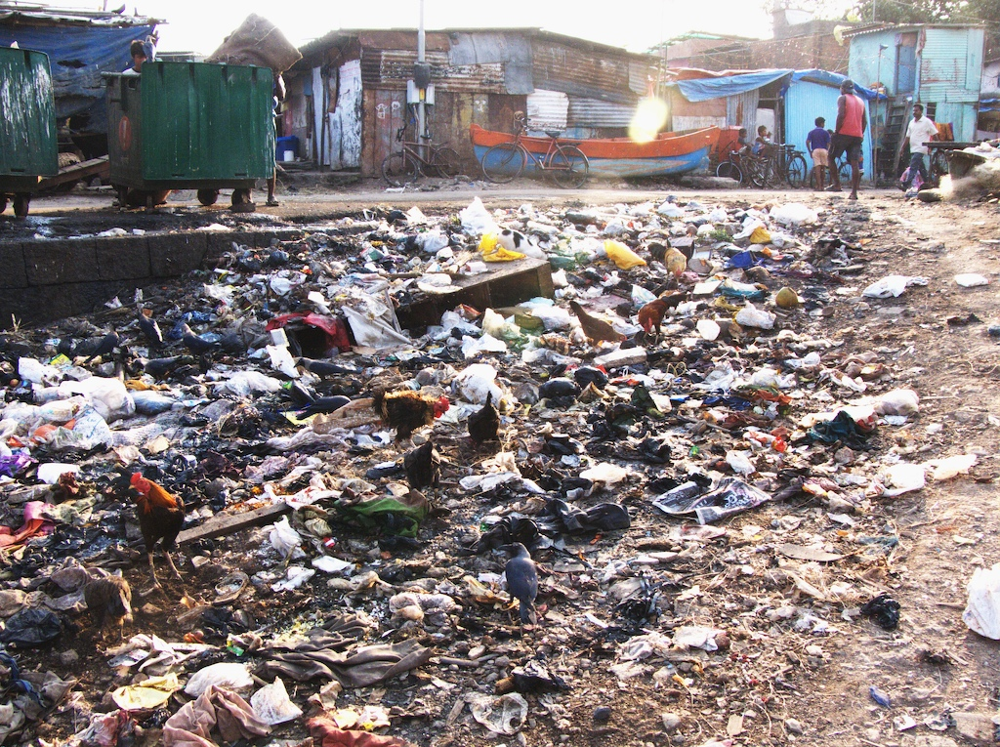
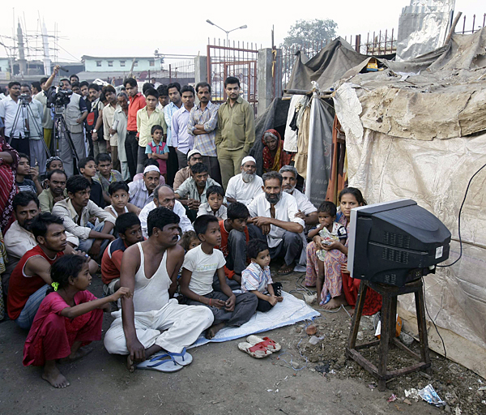

http://alex-kainit.livejournal.com/327574.html
Сергей Лукьяненко
Куба рядом…
Комментарии — Алекс Каинит (alex_kainit)
Раз-раз! Как слышно видно меня? Приём! Читабелен шрифт, глазки не режет? Что, любопытно, отчего это я такой цвет буковкам сделал? А всё очень просто - дело в том, что сейчас у нас будет пост со старым добрым и для некоторых позабывшимся жанром - ЧУЖОЙ статьёй с МОИМИ комментами. За сим надо будет отличать чижие слова от моих.
Признаюсь по секрету - именно с этого "жанра" я и начинал свою "сетевую деятельность". Хотя "деятельностью" по нынешним меркам это сложно назвать - в основном просто глумился над правоставнутыми маразмами и отсылал кое-что на BFP. Потом обрюзг, окряк, надоело на фимозную по***нь внимание обращать, и стал свои статейки и рассказики пописывать, завёл ЖЖ, начал комиксы про Ксенофоба рисовать, но про это вы уж и сами знаете... А вот комменты чужих статей - стали отходить в прошлое за малопродуктивностью сего занятия.
Теперь бы вот тоже скорее всего не придал значение, если бы не.... в общем суть такова - просвещать нас в этот раз взялся не какой-нить "попяра Онуфрий из Нижнехерска" и не "правозащитник Лейба из Мацаедова", а сам Великий_и_Ужасный небезызвестный "Господин Мэтр". Да-да - вот таки решил он научить "простых смертных" уму-разуму :-)) Причём не тому, как надо писать прозу, и даже не тому, как нужно зарабатывать на этом деньги, а.... тому, КАК И ПОЧЕМУ НУЖНО ОТНОСИТЬСЯ К СОЦИАЛИЗМУ... Что ж, почитаем мнение "господина мэтра", попытаемся вникнуть и разобраться, что к чему. Мало ли - Сахаров вот некогда подался в политику и сами знаете, что из этого вышло. Так может "многоуважаемый мэтр" порадует нас иным результатом и подарит таки, наконец, Великое_Просвещение? В общем, не смею больше затягивать - передаю "мэтру" слово, а сам лишь время от времени буду скромно вставлять свои соцаилистические 5 копеек. Добро пожаловать на разбор полётов.
Источник текста: http://www.vz.ru/columns/2010/2/24/378289.html
Сергей Лукьяненко: Куба рядом…24 февраля 2010, 10:00
От ностальгии по временам Союза Советских СОЦИАЛИСТИЧЕСКИХ Республик есть хорошее, хотя и недешевое лекарство – посетить Кубу. Я специально выделил слово СОЦИАЛИСТИЧЕСКИХ, потому что ностальгия по временам Советского Союза – дело совсем иное…
Я давно уже хотел посетить Кубу – последнее, пожалуй, нормальное социалистическое государство на Земле: Китай, развивающий многоукладную экономику, или удивительное царство идей Чучхе под названием Северная Корея – совсем другие государства, речь не о них. И вот представился случай – меня пригласили в состав российской делегации для участия в кубинской книжной ярмарке…
Для начала я хочу сказать две вещи, которые попрошу вас помнить, читая эту заметку: я ехал на Кубу с открытой душой и глубокой симпатией к народу и государству, а уехал я с Кубы… тоже с открытой душой и не меньшей симпатией – и к народу, и к государству.
А вот с социализмом, который многие из вас уже и не помнят, сложнее…
Разумеется, надо помнить, что Куба живет рядом с не самым дружелюбным соседом – Северо-Американскими Соединенными Штатами, иногда называемыми для простоты США. Живет в условиях блокады и военной угрозы со стороны самой сильной и богатой в мире страны. Живет вот уже два десятка лет, лишившись главного союзника и защитника – СССР. Живет практически без природных ресурсов (небольшое количество нефти и металлов не в счет), за счет туризма и человеческого потенциала (40 тысяч кубинских врачей работают в Венесуэле, чем, по сути, оплачивают поставки нефти). Живет в условиях частых ураганов (два года назад именно на Кубу пришелся самый страшный удар стихии).
Очень правильно подмечено. Благодарю, "господин мэтр", за то, что сами сделали на это акцент. Ибо я уж было подумал, что т.н. "факторы давления" на государство будут тактично пропущены. И раз уж Вы, "господин мэтр", абзацем выше попросили читателя на протяжении всей статьи "помнить две вещи", то, я думаю, будет вполне справедлива ещё одна просьба - запомнить И ЭТОТ абзац, ибо он тоже немаловажен.
И все-таки – что дает людям реальный социализм? И чего он дать не может?
Социализм дал кубинцам то, за что его любили и в Советском Союзе: равенство и уверенность в завтрашнем дне. Ты можешь жить бедно, но так будут жить все, включая большинство чиновников, и с голода ты не умрешь.
Ну, раз уж "с голода не умрёшь", то я справедливости ради хотел бы уточнить, что в поминании "господина мэтра" есть "бедно"? Потому как иному в незолотой толчок посрать западло, ибо это признак "бедности"; а другой ездит на скромной тачке (а то и вовсе пользуется общественным транспортом), но вполне себе доволен жинью, и заработок его вполне устраивает.
Ты будешь получать зарплату, которую едва хватит отоварить карточки, – но ты знаешь, что эта зарплата будет. Ты можешь быть уверен, что, заболев, получишь качественную и бесплатную медицинскую помощь, а твои дети пойдут в школу и получат очень приличное образование.
И это все – бесспорный плюс, который и в нашей стране большинство населения назвало бы решающим. Это есть. Взаправду.
Кубинский социализм работает. Реально.
Но социализм не дает – и, боюсь, в своей классической форме не способен дать никогда – прямо противоположных вещей: неравенства и перспективы.
Ужас-то какой! 8-) Ну да ладно - к вопросу "неравенства" я буду приставать чуть ниже, а вот что "мэтр" в данном случае имел ввиду под "перспективой" (сиречь - перспективой ЧЕГО?) - он так и не поясняет. А надо бы.
Под «неравенством» я имею в виду неравенство правильное, которое в советское время пытались втиснуть в формулу «каждому – по труду».
А что - в "советское время" таки не было социализма? То есть вроде как и приводится пример "справедливого неравенства", но, невзирая на то, что оное неравенство как раз таки и было в соцалистическом государстве, почему-то делается утверждение о якобы невозможности его существовании при социализме. Где логика?
Ибо социализм, давая потрясающие результаты на старте, за счет революционного порыва, всеобщего воодушевления, романтики строительства нового мира, сразу утыкается в незримый барьер – при социализме невозможно быть богатым.
Сразу вопрос аналогичный вопросу "про бедность" - что в понимании "господина мэтра" есть "богатый? Обидно ли "господину мэтру" за тех "угнетённых", кому "кровавый социалистический режим" не даёт просраться, лишив золотых унитазов? Считает ли "господин мэтр" каждую слезу тех "несчастных", кто не в состоянии купить себе футбольный клуб (ну, или на худой конец скромный бордель с беспаспортно-бесправными сотрудницами)? Или может просто "контрабанду мечты" кокаинум разных там веществ тело и душа просит, а "злая гэбня" измывается над несчастным - запрещает?
Социалистическое государство может вручать машины и квартиры передовикам производства. Оно способно выплачивать премии и называть именами героев пароходы и паровозы. Но социалистическое государство НИКОГДА не согласится на то, что у одного человека нет автомобиля, а у другого – есть личная яхта и самолет.
Я таки извиняюсь, но вот правильный вопросец - а как это вообще в современных реалиях технически возможно заработать на яхту или самолёт ЧЕСТНЫМИ способами? И попрощу заметить - я говорю НЕ о тех, хоть и персональных, но всё же СЛУЖЕБНЫХ самолётах, которыми по долгу службы пользуются руководители государств, чиновники и т.п. Речь идёт именно о ЧАСТНЫХ яхтах-самолётах, которые НЕ перейдут в руки преемника при уходе человека с должности.
Никогда – ибо это смерть социализма…
А расшифровать? "Смерть справедливому социуму" - может так будет понятней? Нет? "Смерть контролю за корректностью происходящих в социуме процессов"? Сложно? "Смерть противодействию коррупции"? Пафосно? Тогда ждём-с варианта со стороны "господина мэтра". Не пафосом единым сыт читатель.
В обществе, живущем за счет простого механического труда, эта схема вполне работоспособна. Разрыв между плохо и хорошо работающим пахарем или слесарем и впрямь не столь велик, чтобы один зарабатывал только на бутылку, а другой – на личный «Гольфстрим». А уж десятку-другому полководцев, артистов и профессоров можно, в конце концов, позволить чуть большие вольности.
Но стоит лишь нам перейти к современному обществу – и схема социализма дает сбой. При социализме невозможно придумать Google и получить заслуженное – шаблон треснет.
"Получить заслуженное" - это озолотиться на всю жизнь и в дальнейшем не работать? Я правильно понял? Копирайтерство, верно? :-)
Нельзя создать завод, выпускающий Ford или BMW, и стать миллиардером.
А первичный капитал откуда?
Нельзя, никак!
При социализме можно придумать термоядерную бомбу и купить лицензию на «Ладу».
Нет, термоядерная бомба – тоже вещь в нашем мире нужная. И «Лада», как ни странно, тоже машина. Но термоядерная бомба (равно как атомная подводная лодка, космический корабль или лазер) – вещи штучные. Созданные либо на революционной идее, либо путем максимального отступления от уравниловки в мотивациях труда. Все, что ставится на конвейер, все, что окружает нас в повседневной жизни, – требует иного подхода, иной стимуляции – капиталистической.
"Господин мэтр", может-таки с курением синего мха пора завязывать? Уж не хотите ли вы сказать, что при СССР не было "конвейерного производства"? Собрали, видите ли, водородную бомбу и ей одной-одинёшенькой стращали всю планету, да?? :-)) И танк у нас был "штучный" - так повезло, что танкист не заболел во время Второй Мировой; гнал немцев до самого Берлина, и по пути думал, в кого именно запулить свой штучный снаряд :-)))
Или может будет таки правдивы и открыто скажем - дело НЕ в количестве производимой продукции, а в возможности её ПРИВАТИЗИРОВАТЬ. Хочу, мол, термоядерную бомбу иметь в своём сарае и точка! Хочу выё***ься тем, что на свои шиши могу космический корабль купить - пускай братва завидует. Конечно, утрирую, но по сути...
Требует безработицы (нет, не умирающих с голоду – а людей, которые живут на пособие, а хотят жить лучше).
Ниггеры в американских гетто живут на пособие. Хотят жить лучше и... что делают? Наркотой торгуют? Вай-вай, социализм, наверное, виноват...
Это как бы к вопросу о ленивых - если кто-то думает, что для стимула производства надо не трудоустраивать, а увольнять и кормить пособием, дабы снова трудоустроиться стремились и ещё больше из себя выжимали... выжмут как же.
Требует ненормативной стимуляции тех, кто генерирует гениальные идеи, кто способен организовать масштабное и стабильное производство.
К таким людям, вообще-то, и при социализме зачастую было особое отношение. Или у "господина мэтра" бумажно-валютный гешефт есть единое мерило? Ну так отчего не сказать это открытым текстом?
Требует непредсказуемого будущего – в котором есть страхи и опасности, но есть еще и мечты и перспективы.
То есть при социализме "мечты" и "перспективы" отсутствуют? Что касается "страхов" и "опасностей" - самое время, пожалуй, напомнить вышенаписанный абзац про тяжёлое геополитическое положение Кубы. Хватает, в общем.
Ну никуда не деться – капитализм, приняв от социализма целый ряд социальных гарантий, стал куда лучше соответствовать природе человека.
Уточняющее пояснение - природе "хомовульгариса". Сапиенсов "мэтр" не защищает, не положено - целевая аудитория не та.
Уточнение к социальным гарантиям: это было вынужденной мерой, когда нужна была "витрина капитализма" для противостояния социализму. Сейчас социальные гарантии во всех капстранах стремительно уменьшаются. При этом по уровню базовых -- жильё, медицина, образование -- они никогда и не приближались к уровню СССР.
Подчеркиваю – он не стал лучше. Он просто стал адекватнее (как в свое время социализм оказался адекватнее грабительского, бессовестного, человеконенавистнического капитализма образца XIX века).
Кубинский социализм работает. Реально.
В этой бедной стране, где циркулируют две валюты (причем и за «конвертируемый песо» мало что можно купить), где чуть-чуть разрешенная частная инициатива – сдавать комнаты иностранцам, мастерить сувениры или готовить пиццу на улицах – так забюрократизирована, так жестко регламентирована, что мало кто решается даже попробовать «бизнес», в этой стране я за две недели увидел такое количество счастливых, открытых, добрых лиц, которых в России не встретил бы и за год (и богатство тут ни при чем – боюсь, что и в Германии или Франции столько улыбок и беззаботности нет). Что тому причиной – теплый климат, характер кубинцев, гордость за свою независимость? Полагаю, что отчасти и социализм. Равенство и уверенность.
Но страна, где, чтобы купить сыну мобильный телефон, вся семья «выкидывает дом через окно» – так звучит кубинская пословица, означающая какое-то немыслимое напряжение всех сил, не может существовать в мире, где телефоны меняют раз в год.
А я вот пять лет телефон не менял, и ничего. Лошара? Ну, приходите погнобить, посмотрим, что будет...
Да, мобильные телефоны - вещь полезная. Но сразу встаёт вопрос - а действительно ли в их отсутствии виноват социализм? Я тут хочу сделать небольшое отступление и дать отсыл к весьма любопытному фильму - "Город бога". Про жителей из бразильских трущоб. А теперь внимание, правильный вопрос - У МНОГИХ ЛИ тамошних жителей были мобильные телефоны. Хорошо, делаем поправку на эпоху (тогда мобильной связи как таковой могло и быть) - фильм "Пограничный гродок" с Дженнифер Лопес. Правильный вопрос - у многих ли фабричных работниц "капиталистической Мексики" были телефоны и в целом хорошие условия проживания? Вспоминаем кадры про трущобы, не стесняемся...
Дальше — больше.
Предложение номер раз - съездить "господину мэтру" вживую посетить трущобы Рио-Де-Жанейро и попросить у кого-либо из тамошних обитателей "дать позвонить по мобиле".
Предложение номер два - съездить "господину мэтру" в несоциалистическое государство Гаити (таки возблагодарю Наталью Андреевну за то, что тема этого государства до сих пор в моей голове сидит :-))) и собрать статистику о количестве мобильных телефонов у тамошних бокоров :-))
Предложение номер три - несоциалистическая Индия, где нищие зачастую целенаправленно уродуют своих детей, чтобы те, прося подаяние, вызывали куда большую жалость.
И да - во всех вышеперечисленных странах "господин мэтр" найдёт людей, которые будут жить в богатых апартаментых, ездить на дорогих тачках и иметь мобильный телефон. Только вот снова же любопытно - а всегда ли в социальном статусе виновата лень/трудолюбие? В той же Индии с её строгой системой кастовости - работает ли схема? Плюс ко всему - всегда ли в капиталистическом государстве есть возможность улучшить свой социальный статус за счёт одного лишь энтузиазма и желания работать? Как, например, из фабричного работника стать работником офиса, если высшее образование ПЛАТНОЕ?? Нет, фразочки вида "кто хочет, тот и на образование заработает" не катят - гнилые отмазки, исключающие временную компоненту и факт ограниченности человеческой жизни во времени. Ну, да - кому-то везёт, а иной пока заработает, так уже и старость подошла. И это если полностью опустить инстинкты, вызывающие у индивида потребность в репродукции и создании семьи. А ведь с учётом пропаганды и личного желания воспроизводства у некоторых - накопить в короткие сроки и без экономии на семье - практически нереально.
Хотя да, я не спорю - для "господина мэтра" категория "богатых" людей куда ближе вне зависимости от того, КАК они получили свой социальный статус. Пресечение возможности обдирания одних другими, судя по всему, вызывает у "мэтра" неиллюзорный баттхёрт. Да, глупа позиция Шарикова про "отобрать и поделить", поэтому хочется немного подсластить эту позицию Оруэлловской компонентой, чтобы на выходе получилось: "отобрать и поделить СРЕДИ ТЕХ, КТО РАВНЕЕ".
Нельзя жить на одной романтике, если к тебе приезжают туристы, увешанные дорогой фото- и видеоаппаратурой.
Так живут ведь. Но если этот факт "господина мэтра" не устраивает, то что он хочет предложить кубинцам взамен - возможность созерцать дорогую фото- и видеоаппатаруту НЕ на туристах, а на МАЛОЙ части своего коренного населения, самим при этом затянув ремни потуже и живя не в скромном домике, а в фанерной хибаре? Ну а хули - старые домишки под бульдозер, на их месте будут пятизвёздочные отели, игорные дома, бордели, клубы, элитные рестораны. А тех, кто ранее занимал тут место - на побережье. Благо климат тёплый, из картона фанеры и рубероида пускай соорудят себе укрытия. Верно я говорю, "господин мэтр"?
Можно показать по государственному телевидению «Аватар», но те, кто все-таки смотрит спутниковое телевидение, понимают, что «Аватар» не такая уж и фантастика…
И у корпорации "RDA" тоже были бульдозеры. Вот только залезть в данном случае "господин мэтр" предлагает не в землю за недостанием, а в чужой карман с целью обогащения малой кучки "власть имущих".
Мне очень симпатичен кубинский социалистический эксперимент. Их попытка все-таки удержать общество социальной справедливости. Но кубинские дети в красных пионерских галстуках видят МП-3 плееры в руках туристов, и у них загораются глаза…
Снова же правильный вопрос: учитывая сложное геополитической положение Кубы - ДЕЙСТВИТЕЛЬНО ЛИ эти дети будут иметь в своём распорядении MP3-плейеры при капитализме? Или точно также будут смотреть с "загоревшимися глазами", но только уже БЕЗ красных галслуков и чего-либо другого, чем можно было бы прикрыть шею?
Я помню, как совсем в другой стране – Советском Союзе – я и мои сверстники, затаив дыхание, разглядывали первые кассетные плееры, сверкающие автомобили и разноцветные упаковки в витринах.
Новизна всегда привлекает вне зависимости от того, является ли продукт порождением капитализма или же социализма.
И я помню, чем это закончилось.
Вот и мне таки интересно - ЧЕМ ЖЕ это всё таки это закончилось?? Не каждый современный москвич чувствует специфику наступившей за этим "капиталистической эпохи". Но вот новый вопрос на проверку эрудиции - знает ли "господин мэтр", кто такие "замкадыши"? И многие ли плюсы дал им "славный капитализм"?
Боюсь, что социализм все-таки имеет ошибку, и ошибка эта – в ДНК…
Ссыкотно, да? :-)
Вместо привычного и радующего глаз скоточеловека-хомовульгариса, который мечтает как бы побольше нажраться, больше хапнуть, больше высрать; вдруг появилось нечто "генетически модифицированное" :-)) Ну да - нет пока mp3-плееров у тех, кто на острове, без ресурсов, в метео-нестабильной зоне и с прочьим "прелестями"... Ровно как и нет у большинства тех, кто живёт за пределами Москвы и Питера в ныне капиталистическом государстве "Путинская Эрэфия". Только разница в том, что "неимущие кубинцы" убылаются, а вот "неимущие русские"......без комментариев.
Хотя не думаю, что "господин мэтр" считает территории "неимущих русских" частью своего государства, за сим вопрос не развиваю...
Потому что человеку не хочется хорошего. Человеку хочется лучшего.
А лучшее, в отличие от хорошего, социализм как раз таки дать не может…
...тем, кто НЕНАСЫТЕН.
В то время, как хвалёный капитализм не всегда может дать даже "хорошее" БОЛЬШЕЙ части своих граждан. Да, будет "край небоскрёбов и роскошных вилл". Да, будет в них энная часть потреблядей относительно счастлива (как правило это "жёны барыг", потому что сами "барыги" зачастую теряют навык радоваться - слишком часто "жопу рвать" приходится, оттого психоэмоциональное состояние крайне нестабильно да, нервишки лечить впоследствии приходится за "большие бабосы"). А что будет за этим стоять? Какова "оборотная сторона медали"?
P.S. А с Кубой, конечно, надо дружить. Несмотря на разность политических и социальных систем. Потому что там живут хорошие люди. И хотя они немного на нас обижены – в большинстве своем они нас до сих пор любят. Они помнят хорошее куда больше, чем некоторые соседи, которые рядом с нами…
И вы, "господин мэтр", яркий пример таких "ближних соседей"...

Лики капитализма

Задание: "Найди mp3-плейер"

Мечта "господина мэтра"

Капитализм дал им телевизор
А вообще всё это малоудивительно - ибо копирайтер не может любить социализм по определению...

P.S. …и моя статья про Кубу.